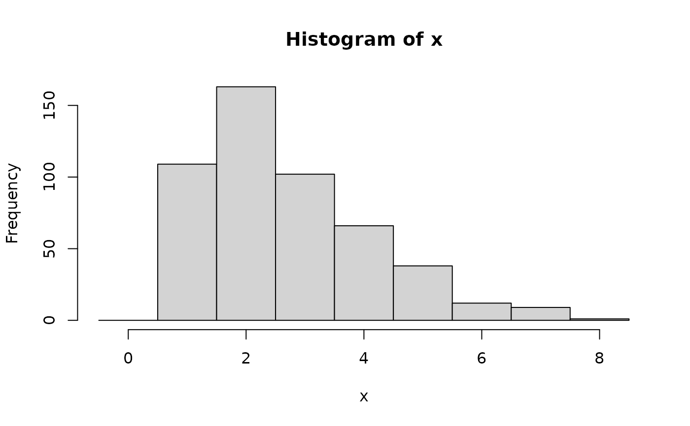
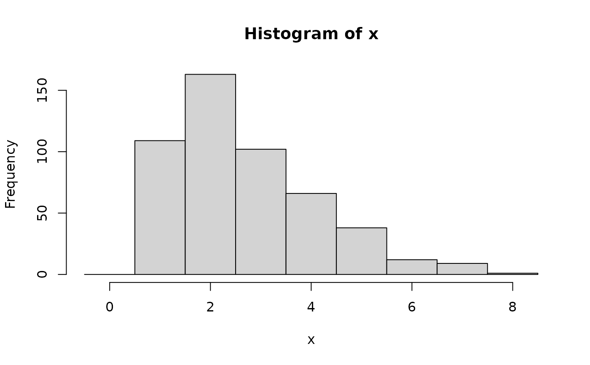

Evaluate the probability mass function of a zero-truncated Poisson distribution
Source:R/ZTPoisson.R
pdf.ZTPoisson.RdEvaluate the probability mass function of a zero-truncated Poisson distribution
Arguments
- d
A
ZTPoissonobject created by a call toZTPoisson().- x
A vector of elements whose probabilities you would like to determine given the distribution
d.- drop
logical. Should the result be simplified to a vector if possible?
- elementwise
logical. Should each distribution in
dbe evaluated at all elements ofx(elementwise = FALSE, yielding a matrix)? Or, ifdandxhave the same length, should the evaluation be done element by element (elementwise = TRUE, yielding a vector)? The default ofNULLmeans thatelementwise = TRUEis used if the lengths match and otherwiseelementwise = FALSEis used.- ...
Arguments to be passed to
dztpois. Unevaluated arguments will generate a warning to catch mispellings or other possible errors.
Value
In case of a single distribution object, either a numeric
vector of length probs (if drop = TRUE, default) or a matrix with
length(x) columns (if drop = FALSE). In case of a vectorized distribution
object, a matrix with length(x) columns containing all possible combinations.
Examples
## set up a zero-truncated Poisson distribution
X <- ZTPoisson(lambda = 2.5)
X
#> [1] "ZTPoisson(lambda = 2.5)"
## standard functions
pdf(X, 0:8)
#> [1] 0.000000000 0.223563725 0.279454656 0.232878880 0.145549300 0.072774650
#> [7] 0.030322771 0.010829561 0.003384238
cdf(X, 0:8)
#> [1] 0.0000000 0.2235637 0.5030184 0.7358973 0.8814466 0.9542212 0.9845440
#> [8] 0.9953735 0.9987578
quantile(X, seq(0, 1, by = 0.25))
#> [1] 1 2 2 4 Inf
## cdf() and quantile() are inverses for each other
quantile(X, cdf(X, 3))
#> [1] 3
## density visualization
plot(0:8, pdf(X, 0:8), type = "h", lwd = 2)
 ## corresponding sample with histogram of empirical frequencies
set.seed(0)
x <- random(X, 500)
hist(x, breaks = -1:max(x) + 0.5)

## corresponding sample with histogram of empirical frequencies
set.seed(0)
x <- random(X, 500)
hist(x, breaks = -1:max(x) + 0.5)
